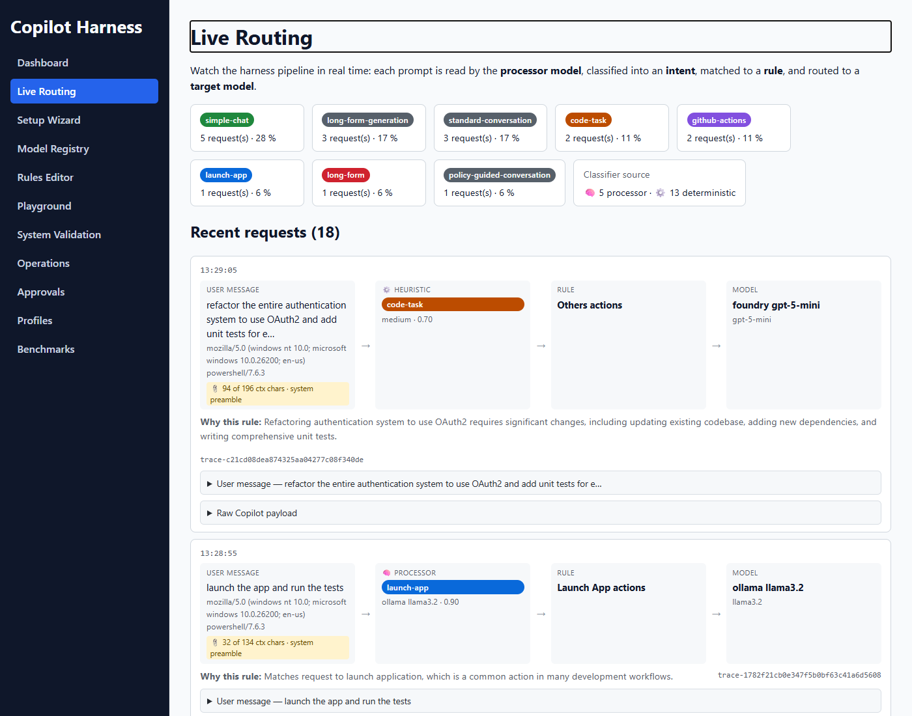
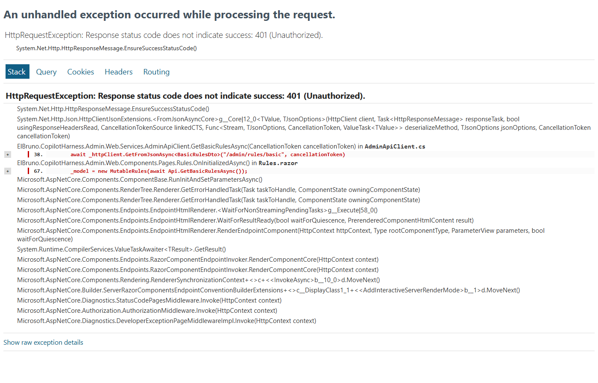
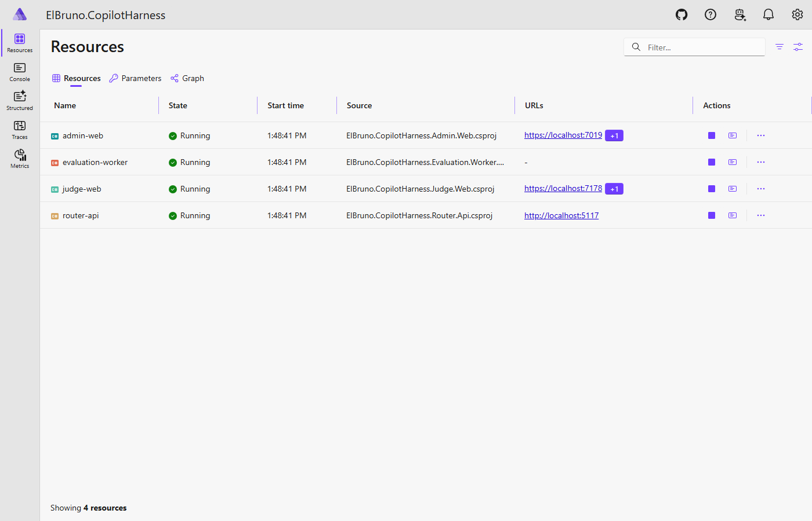

Open Source · .NET 10 · .NET Aspire · BYOK
"Route every GitHub Copilot request through your own rules — local for speed and privacy, cloud for power — with full explainability and zero client-side changes."
The Problem
Every prompt you type goes to a model you didn't choose, on infrastructure you don't control, with zero visibility into why that model was picked. As AI-assisted coding moves deeper into enterprise workflows, three friction points start to hurt.
Your team's proprietary code, internal architecture, and unreleased features travel to a cloud endpoint with every tab-completion. For regulated environments, that's a blocker.
A one-word inline completion and a 10,000-token code review cost the same per-token. Local models are essentially free after the hardware investment — but there's no built-in way to route "simple stuff" locally.
When something goes wrong, you have no record of which model responded, which version, or what context it saw. Routing is a black box.
How It Works
The harness sits between Copilot and the upstream model — a vertical stack where each layer feeds into the next. Use arrow keys or click to advance the slides.
The animated walkthrough is best on a wider screen.
▶️ Open the full-screen walkthrough →Screenshots



Get Started
Prerequisites:
.NET 10 SDK,
Aspire CLI (dotnet tool install --global aspire),
Ollama with llama3.1:8b pulled,
a GitHub Copilot subscription,
and an Azure AI Foundry endpoint.
# 1 — Set your secrets once
cd src/ElBruno.CopilotHarness.AppHost
aspire secret set FoundryEndpoint "https://<your-resource>.openai.azure.com/openai/v1"
aspire secret set FoundryApiKey "<your-azure-foundry-api-key>"
aspire secret set AdminApiKey "<any-password-you-choose>"
# 2 — Launch
aspire run
# 3 — In VS Code: Manage Language Models → Add → Custom Endpoint
# URL: http://localhost:5117/v1/chat/completionsOpen the Admin dashboard, watch the Live Routing feed, and write your first rule. The whole thing takes under 10 minutes from clone to first routed Copilot request.